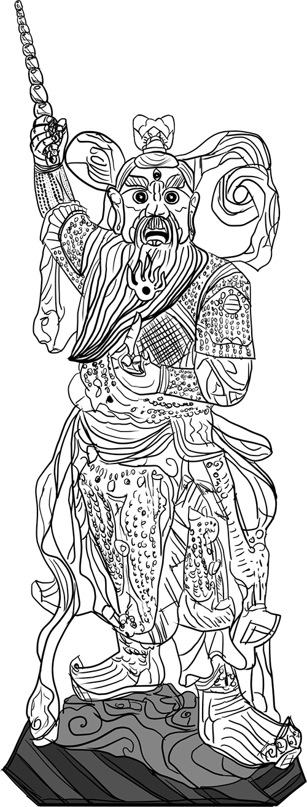

吾乃順天應命，真靈正駕之先天靈乩，法號龍心，師承元始天尊，主神「南斗星宮，離火之首，三眼能觀天下事，一鞭驚醒世間人」，先天火車豁落靈官，王天君祖是也，居無極火龍宮，奉母命天令，即刻開放遠距收驚濟世服務。
歷史沿革
民國102年間，因緣際會開啟與靈界溝通的斜槓人生，修持至今，度化有緣眾生，已然成為此生職志。民國105年，奉玉旨，恭請神尊「三界伏魔大帝關聖帝君」辦理聖事。民國109年，正式開設「無極火龍宮」之無形聖殿，並恭迎主神「先天火車豁落靈官王天君祖」鎮殿，按辦事科儀和信眾需求，即時奉請眾仙神佛做主護持，庇佑蒼生，祈求國泰民安、風調雨順。
濟世服務
收驚制煞
不必親臨現場或使用衣物替代，突破傳統科儀，遠距收驚制煞更為方便、快速、有效。適用對象除了受驚的嬰幼兒、小孩及大人，尤其屬於靈異敏感體質者，更可幫助寶貝的毛小孩和各種寵物們安魂定魄，釋放身心靈的壓力，或化解來自無形世界的干擾。
通靈問事
使用靈語，也謂天語，以及心通感應與神明靈體接觸溝通，凡問事者心中之疑惑無法以常理解釋，亦或疑似靈異現象事件等，皆可誠心問之。
超度亡靈
超度往生者，加快投胎轉世的進度，亦或暫時化解累世冤魂之討報，以利事主秉持誠心功德迴向。適用對象包括已離開人世的親朋好友或心愛寵物之亡靈，甚至祖先、嬰靈及冤親債主等。
降妖伏魔
世間妖邪無所不在，內有心魔作祟，外有鬼怪亂世，心魔不生不滅，外魔無法無天，若非因果業報，確有危害身家性命之實，承玉旨，即刻替天行道，降妖伏魔，先斬後奏，可謂濟世救民也。
靈體治療
身體會受傷，而靈體也會受創，靈魂能量受損會直接反應到人體表象，針對受傷部位給予靈能或持咒修補，若有對症立即見效，但且記住，有形的病交給醫師，無形的病交給法師。
招財開運
世間之人財富皆有定數，施此開運招財符法，祈福信眾轉化財氣能量，調度先天本命財庫，或得招財開運其效之用也。
功德迴向
以贊助本宮濟世服務之功德，取得「感謝狀」後火化，恭請「豁落靈官王天君袓」做主，即刻迴向事主指定對象，如：祖先、嬰靈、動物靈及冤親債主等，祈求化解累世的怨恨或轉化無量功德給予無形眾生，助其早日超脫生死輪迴。
預約報名
填寫資料
請按照欄位依序填寫必要的資料，確認後點擊提交按鈕並完成報名。
線上繳費
「收驚制煞」請先支付報名費新台幣壹佰元/人次，內含單次收驚服務費用，預約人數含二人以上，可單筆支付多人費用，報名繳費或樂捐贊助請使用以下方式付款：
- ATM轉帳
中國信託商業銀行(代號:822)
帳號：705540006199
- LINE Pay行動支付
轉帳代碼 2092689054
- icash Pay電子支付
電支帳號 1682011004155864
- 悠遊付Easy Wallet電子支付
轉帳代碼 2202104091988880

開始收驚
確認報名及收費完成時，將會通知您預定辦理聖事的時段，若需線上即時處理，將另外約定服務時間。